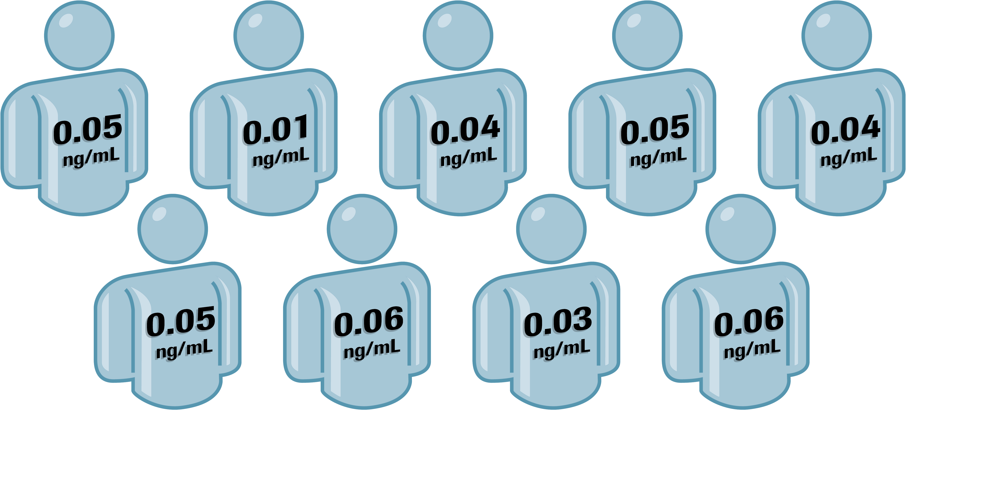
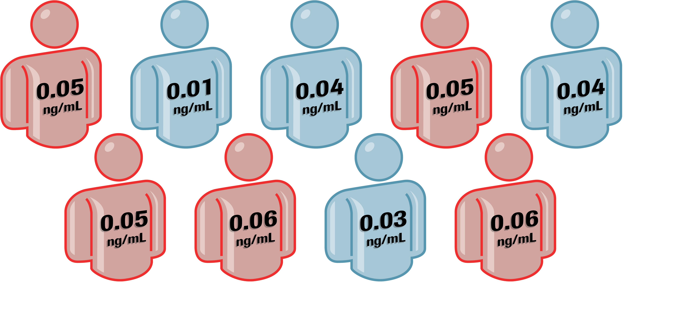
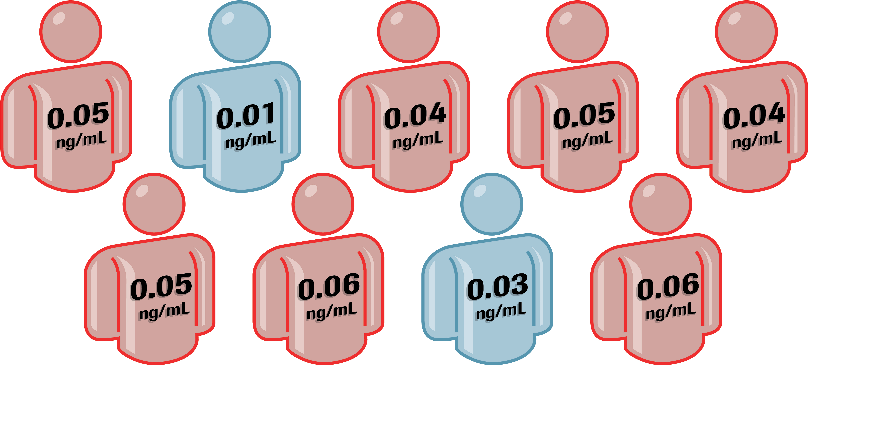
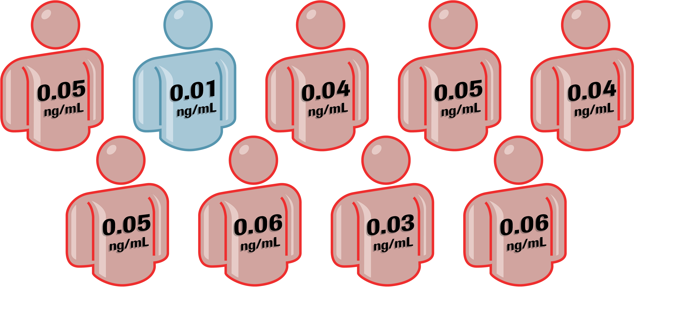

TnI assays have different analytical sensitivities
   The multiplicity of assays for TnI makes standardization of TnI results problematic.26
- TnI assays have different analytical sensitivities.
- Different TnI assays measure different epitopes of TnI.
- TnI assays have different 99th percentiles.
How do you take serial measurements using two different TnI assays?
How many different TnI assays does it take to detect TnI?